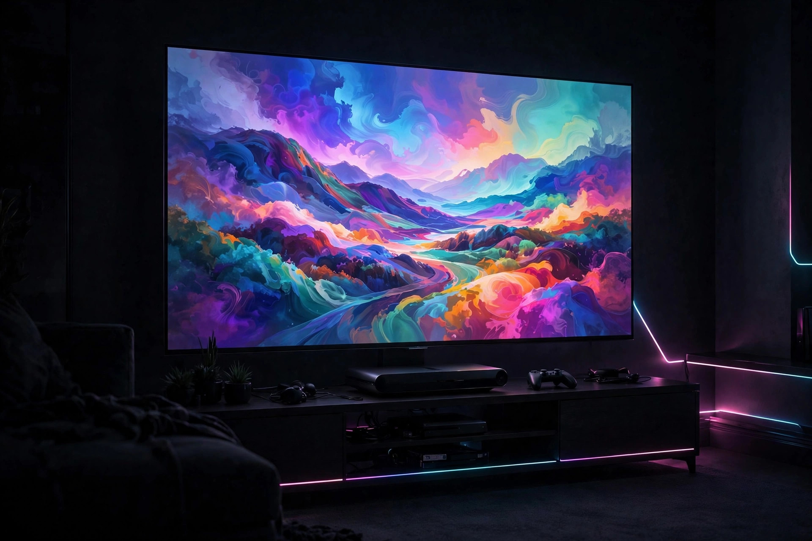
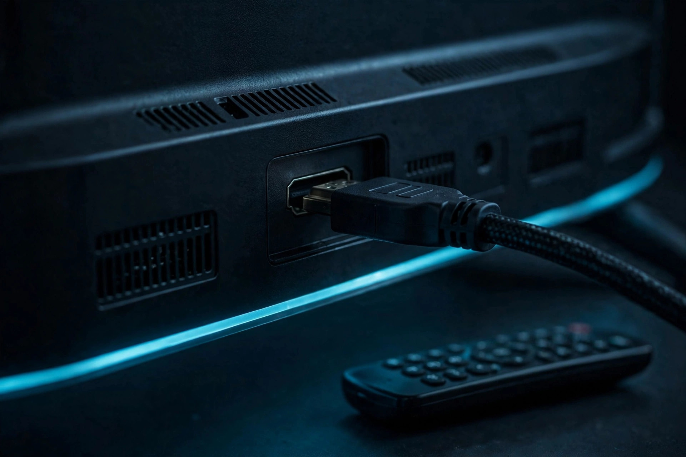

TV and display settings for launch: a verify-first checklist

Display advice for a big launch usually begins with a list of settings to switch on. This checklist begins with what is not known: Rockstar has published no GTA VI resolution, frame-rate, HDR, or performance-mode details. Its official page confirms the essentials — the game arrives November 19, 2026 on PlayStation 5 and Xbox Series X|S — and nothing about how it will render. That gap changes the job. You cannot tune a television for a mode that has not been announced, but you can verify, end to end, what your existing chain of console, cable, port, and screen genuinely supports, calibrate HDR once and correctly, and know exactly which screen will prove it on launch day. That work is useful for everything you already play, and it costs nothing.
Capability is not a promise. A console that can output 4K at 120 Hz and a television that can display it only matter for a game that offers such a mode. Treat every number in this guide as a capability of the hardware — sourced from PlayStation and Xbox — never as a claim about GTA VI itself.
Verify the chain before you change anything
A gaming display signal passes through four links: the console's output settings, the HDMI cable, the specific port on the television, and the television's own input and picture settings. A weakness at any link caps all the others, and changing settings at random cannot tell you which link it was. PlayStation's official troubleshooting for 4K 120 Hz makes the chain explicit: confirm the TV claims the support, that its firmware is current, that the cable is the one included with the console or an Ultra High Speed cable rated for the job, that the console connects directly rather than through intermediary equipment that could affect the signal, and that an HDMI 2.1 port is in use where one exists. Work in that order — record the starting state, change one link at a time, and re-check the console's diagnostic screen after each change. The diagnostic screen, not optimism, is the record of what your setup supports.
| Check | PlayStation 5 | Xbox Series X|S |
|---|---|---|
| Where display settings live | Settings > Screen and Video > Video Output | Settings > General > TV & display options (official Xbox display-resolution support route) |
| What the verification screen shows | Current Video Output Signal: the connected device's resolution, VRR, and HDR details | Display resolution settings for the connected TV, per Xbox support |
| Documented design target | Video out supports 4K 120Hz TVs and VRR under HDMI 2.1 | Series X target: 4K at 60 FPS, up to 120 FPS. Series S design: 1440p at 60 FPS, with support for up to 120 FPS |
| HDR calibration | Settings > Screen and Video > Video Output > Adjust HDR | Calibrate through the console's display options for your TV, then confirm the TV reports an HDR signal |
The Series S row deserves emphasis. Xbox introduced that console as designed for 1440p play, rendering at a lower resolution than Series X while sharing its development environment. A Series S owner whose screen reports a clean 1440p or 1080p signal with HDR is not looking at a failure to fix — that is the console working as designed, and no television purchase changes it.
PS5: the display pass, step by step
- Read the signal first. Open Settings > Screen and Video > Video Output and read the Current Video Output Signal. Note the resolution, and whether VRR and HDR are reported for your connected display. This is your baseline.
- Leave resolution on Automatic unless you have a reason. PlayStation says the console detects the TV's capabilities and, on Automatic, uses the highest resolution the TV supports; 2160p can be selected directly for 4K. If you use a 1440p display, the same screen offers a 1440p output test covering SDR and HDR at 60 and 120 Hz, plus VRR.
- Set VRR and 120 Hz output deliberately. VRR lets the refresh rate adjust in real time on TVs and games that support it, and PlayStation offers an option to apply it to unsupported games as well — with the warning to switch that option off if unexpected behaviour appears. The 120 Hz setting enables 120 Hz output for TVs and games that support a 120 Hz frame rate; if a monitor or display produces video problems with it, PlayStation's guidance is to turn it off.
- Check ALLM. If your TV supports auto low-latency mode, the PS5 automatically switches it into low-latency mode during games. Note PlayStation's interaction: under VRR output the TV switches automatically even if ALLM is set to Off, so fully disabling ALLM also requires VRR to be Off.
- Calibrate HDR last on the console side. Set HDR to On When Supported unless you specifically want non-HDR content converted — PlayStation explains that Always On converts even games and apps that are not HDR-compatible, while On When Supported leaves them in standard dynamic range. Then run Adjust HDR from the same Video Output screen and follow its on-screen instructions in your normal viewing lighting.
- Re-read the signal. Return to Video Output and confirm the reported signal matches what you intended. What success looks like: the screen shows the resolution and features your TV genuinely supports, with no flicker and no fallback you did not choose.
Xbox Series X|S: the display pass, step by step
Microsoft publishes its display-resolution support through Xbox Support, and the console's display settings live under Settings > General > TV & display options. Work the same verify-first pattern:
- Start from the console's display options and read what is selected for resolution and refresh before touching the television. Record it, as on PS5.
- Judge the result against the right target. For Series X, Xbox's own specification names a performance target of 4K at 60 FPS, up to 120 FPS. For Series S, Xbox's design target is 1440p at 60 FPS with support up to 120 FPS. A setting is correct when it matches your console's target and your TV's real support — not when every number is at its maximum.
- Change one option, then re-check. Alter resolution or refresh alone, return to the display screens, and confirm the console still reports a stable signal on your TV before changing anything else.
- Confirm HDR on the television side. After enabling HDR output on the console, verify the television itself reports an HDR signal on that input. A console toggle without the TV's confirmation is an assumption, not a result.

The TV side: game mode, the right port, and motion settings
Television menus differ by brand, so this guide names functions rather than invented menu paths. Three jobs matter. First, the input your console uses should be in the TV's game or low-latency mode while you play: general picture processing built for film and broadcast is not designed around controller response, and ALLM exists precisely so a supporting TV can make that switch automatically when a console is active. Second, use the port the TV's own manual identifies for its highest-bandwidth input when you are chasing the console's top output — PlayStation's guidance treats the HDMI 2.1 port as part of the 4K 120 Hz check, and some televisions only enable their full input format on specific ports or after an enhanced-format option is set for that port. Third, turn off motion-smoothing style processing for the gaming input: features that invent frames for television pictures work against a signal the console is already generating frame by frame. Change these one at a time, returning to a game you know well between changes, so any difference you see has exactly one possible cause.
The decision framework: fix, accept, or upgrade
When the verification screens disagree with what you expected, sort the result into one of three decisions. Fix it when the gap is a setting, a cable, a port, or TV firmware — the chain checks above resolve those for free. Accept it when the gap is the honest limit of hardware you own: a 60 Hz television will not display a 120 Hz signal, a Series S is designed around 1440p, and a good 1080p or 1440p HDR picture is a complete, playable result rather than a consolation prize. Defer any upgrade until Rockstar publishes actual performance details and you can judge a new display against a real game mode instead of a capability list. Buying a television in October for an unannounced mode is the display version of buying storage for an unannounced install size: the honest plan is to make the current setup verifiably its best, then decide with real information.
If it flickers, tears, or looks washed out
Work backwards through the change you just made before changing anything else. PlayStation documents one specific flicker remedy: limiting the 4K Video Transfer Rate to -1 or -2 can improve picture quality when flicker appears, at the cost of limiting some output — both steps limit 4K 120 Hz and certain colour formats, so treat them as a stability trade, not a free improvement. Screen tearing is the problem VRR exists to smooth on supporting TVs and games; if tearing persists with VRR on, confirm on the Video Output Information that VRR is actually being reported for your display, rather than simply enabled in a menu. A washed-out picture after enabling HDR usually means the calibration was done in different lighting than you play in, or that a conversion setting is active: on PS5, check whether HDR is set to Always On, which converts non-HDR content, instead of On When Supported, then re-run Adjust HDR. In every case, the fix is confirmed the same way it was caused — on the console's own reported signal.
FAQ
Does GTA VI run at 4K or 120 fps? Rockstar has announced neither, in the sources used for this guide. The frame-rate and resolution figures here are console capabilities and design targets from PlayStation and Xbox, not game specifications.
Do I need a new TV for launch? Nothing published says so. Verify and calibrate the television you own first; upgrade decisions belong after real performance details exist.
Should PS5 HDR be Always On or On When Supported? PlayStation's own distinction is the answer: Always On converts even non-HDR games and apps to HDR output, while On When Supported shows non-HDR content in SDR. For a launch checklist, On When Supported is the setting that shows each game as it was made to be shown.
What is the success check? On PS5, the Video Output screen reporting the resolution, VRR, and HDR state you intended, with a stable picture. On Xbox, the TV & display options showing a stable signal that matches your model — 4K-targeted on Series X, 1440p-designed on Series S.